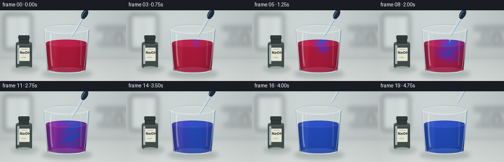
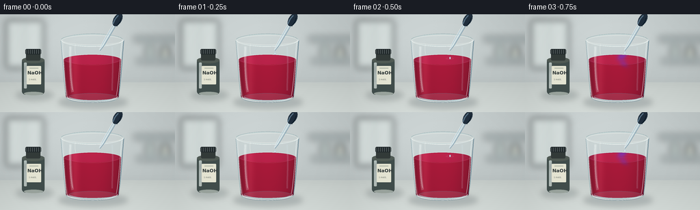

CODING AGENTS AS PIXEL WORLD MODELS
traex/GPT-6.1-Sol · material_0031
点击播放 · 原生 RGB 像素
逐轮保存的候选
回放视频、检查图与代码变化。
每份候选均可单独播放。实际图片检查记录在下方工具轨迹中。
候选 01播放与检查图
点击播放 · 原生 RGB 像素


展开代码变化
--- 上一保存版本
+++ 本次保存版本
@@ -0,0 +1,209 @@
+from pathlib import Path
+import math
+import numpy as np
+from PIL import Image, ImageDraw, ImageFont, ImageFilter
+from artifact_io import save
+
+ROOT = Path(__file__).resolve().parent
+S = 4
+W,H=256*S,144*S
+rng=np.random.default_rng(7103)
+y,x=np.mgrid[0:H,0:W].astype(float)/S
+
+def smooth(z):
+ z=np.clip(z,0,1)
+ return z*z*(3-2*z)
+
+def overlay(im):
+ layer=Image.new('RGBA',(W,H))
+ return layer,ImageDraw.Draw(layer)
+
+def box(b):return tuple(int(v*S) for v in b)
+def line(d,pts,fill,width=1):d.line([(int(a*S),int(b*S)) for a,b in pts],fill=fill,width=max(1,int(width*S)))
+def ellipse(d,b,fill,outline=None,width=1):d.ellipse(box(b),fill=fill,outline=outline,width=max(1,int(width*S)))
+def rect(d,b,fill,r=0):
+ if r:d.rounded_rectangle(box(b),radius=int(r*S),fill=fill)
+ else:d.rectangle(box(b),fill=fill)
+def curve(d,points,fill,width):
+ pts=[]
+ for t in np.linspace(0,1,80):
+ q=(1-t)**3*np.array(points[0])+3*(1-t)**2*t*np.array(points[1])+3*(1-t)*t*t*np.array(points[2])+t**3*np.array(points[3])
+ pts.append(tuple(q))
+ line(d,pts,fill,width)
+
+# Softly lit laboratory, photographed at tabletop height.
+bg=np.zeros((H,W,3),float)
+light=np.exp(-((x-104)/132)**2-((y-20)/106)**2)
+for k,c in enumerate([183,191,191]):bg[:,:,k]=c+28*light
+wallshade=5*np.sin(x/70)+3*y/144
+bg-=wallshade[:,:,None]
+bg+=rng.normal(0,.42,(H,W,1))
+back=Image.fromarray(np.uint8(np.clip(bg,0,255))).convert('RGBA')
+b,d=overlay(back)
+rect(d,(8,8,65,80),(174,188,188,80),3)
+rect(d,(10,9,61,77),(223,232,229,150),2)
+line(d,[(36,9),(36,77)],(147,164,164,65),1)
+rect(d,(195,33,260,40),(111,137,143,95),2)
+rect(d,(199,65,266,72),(110,132,139,80),2)
+# Blurred out-of-focus bottles on a rear shelf.
+rect(d,(213,46,226,64),(160,180,171,100),2)
+rect(d,(216,42,222,46),(112,137,135,110),1)
+rect(d,(235,48,248,65),(196,201,186,160),2)
+rect(d,(238,44,245,48),(118,137,141,120),1)
+b=b.filter(ImageFilter.GaussianBlur(5*S))
+back=Image.alpha_composite(back,b)
+# Cool-gray smooth lab bench.
+table=np.zeros((H,W,4),np.uint8)
+m=y>=100
+for c,base in enumerate([197,204,201]):
+ table[:,:,c]=np.uint8(np.clip(base+14*(y-100)/44+4*np.exp(-((x-100)/100)**2),0,255))
+table[:,:,3]=np.uint8(m*255)
+back=Image.alpha_composite(back,Image.fromarray(table,'RGBA'))
+b,d=overlay(back)
+line(d,[(0,100),(256,100)],(149,164,161,60),.5)
+# Contact and cast shadows.
+ellipse(d,(85,120,187,139),(36,50,58,53))
+ellipse(d,(23,111,78,127),(28,43,46,45))
+b=b.filter(ImageFilter.GaussianBlur(4*S));back=Image.alpha_composite(back,b)
+
+# Reagent bottle, slightly behind the primary glass; legible chemical identity.
+b,d=overlay(back)
+rect(d,(32,65,65,118),(65,78,76,255),5)
+ellipse(d,(32,63,65,72),(81,91,85,255))
+rect(d,(38,56,59,68),(51,59,57,255),2)
+rect(d,(37,51,60,59),(34,42,44,255),2)
+for i in range(38,60,3):line(d,[(i,52),(i,58)],(86,95,96,155),.55)
+rect(d,(35,71,39,109),(129,150,139,65),1)
+rect(d,(39,76,60,103),(231,231,213,255),1)
+font=ImageFont.truetype('/usr/share/fonts/truetype/dejavu/DejaVuSans-Bold.ttf',7*S)
+small=ImageFont.truetype('/usr/share/fonts/truetype/dejavu/DejaVuSans.ttf',3*S)
+d.text((40*S,82*S),'NaOH',font=font,fill=(47,56,56,255))
+d.text((42*S,94*S),'1 mol/L',font=small,fill=(96,104,99,255))
+line(d,[(43,79),(56,79)],(97,116,109,255),.5)
+ellipse(d,(35,114,63,119),(133,145,134,130))
+back=Image.alpha_composite(back,b)
+
+# Glass refraction shell behind the colored solution.
+b,d=overlay(back)
+d.polygon([(int(a*S),int(b*S)) for a,b in [(89,38),(97,123),(101,128),(168,128),(173,122),(181,38)]], fill=(197,221,224,29))
+curve(d,[(89,38),(92,72),(94,110),(97,123)],(111,144,153,125),1.15)
+curve(d,[(181,38),(178,72),(176,110),(173,123)],(93,127,143,120),1.1)
+ellipse(d,(89,29,181,47),(224,239,237,28),(108,141,147,125),.8)
+ellipse(d,(91,31,179,45),None,(250,255,249,155),.7)
+back=Image.alpha_composite(back,b)
+
+cx=135.0
+radius=42.0-(y-67)*.065
+u=(x-cx)/radius
+inside=np.abs(u)<1
+arc=np.sqrt(np.clip(1-u*u,0,1))
+top=67-7.6*arc
+bottom=121+5.1*arc
+fluidmask=inside&(y>=top)&(y<=bottom)
+noise=rng.normal(0,.30,(H,W))
+
+def make_frame(i):
+ t=i/4
+ age=max(0,t-.36)
+ p=float(smooth((age-1.10)/2.9))
+ sway=146 + 4*np.sin((y-67)*.10-age*2.3) + 2*np.sin(y*.24+age*1.4)
+ plume_width=2.7+age*6.7
+ plume=np.exp(-.5*((x-sway)/plume_width)**2)
+ front=66+age*20
+ reach=1/(1+np.exp(np.clip((y-front)/4.6,-60,60)))
+ curls=.79+.21*np.sin(y*.33+x*.15-age*3)
+ local=float(smooth(age/.7))*.94*plume*reach*curls
+ c=np.clip(p+(1-p)*local,0,1)
+ # In accelerated time the concentration homogenizes from the impact plume.
+ c=np.maximum(c, smooth((age-3.4)/.7))
+ red=np.array([169.,15.,49.]);purple=np.array([112.,29.,143.]);blue=np.array([23.,65.,180.])
+ a=smooth(c*2);q=smooth((c-.5)*2)
+ rgb=red[None,None,:]*(1-a[:,:,None])+purple[None,None,:]*a[:,:,None]
+ rgb=rgb*(1-q[:,:,None])+blue[None,None,:]*q[:,:,None]
+ cylindrical=.66+.35*arc
+ # Rounded cylinder, illuminated from the left, deeper at the lower meniscus.
+ lighting=cylindrical*(1-.0015*(y-67))+.065*np.exp(-((x-110)/8)**2)
+ rgb*=lighting[:,:,None]
+ surface=(y<67+6.8*arc)&fluidmask
+ rgb+=surface[:,:,None]*np.array([15,9,16])
+ rgb+=np.exp(-((x-109)/5.5)**2)[:,:,None]*np.array([13.,10.,10.])
+ rgb+=noise[:,:,None]
+ fluid=np.zeros((H,W,4),np.uint8)
+ fluid[:,:,:3]=np.uint8(np.clip(rgb,0,255))
+ fluid[:,:,3]=np.uint8(fluidmask*239)
+ im=Image.alpha_composite(back,Image.fromarray(fluid,'RGBA'))
+ b,d=overlay(im)
+ # Surface lip and luminous, elliptical meniscus.
+ cc=c[int(67*S),int(145*S)]
+ sr=red*(1-float(smooth(cc*2)))+purple*float(smooth(cc*2))
+ sr=sr*(1-float(smooth((cc-.5)*2)))+blue*float(smooth((cc-.5)*2))
+ col=tuple(int(v) for v in sr)
+ ellipse(d,(93,59.5,177,74.5),None,col+(135,),.65)
+ curve(d,[(94,65),(105,56.9),(161,55.7),(175,64.5)],(240,241,240,91),.55)
+ curve(d,[(95,68),(112,77),(160,77),(175,68)],(255,219,230,72),.4)
+ # Rings at successive drop impacts, rapidly damped.
+ if .4<t<3.3:
+ phase=((t-.3)%.54)/.54
+ r=1.8+phase*10
+ ellipse(d,(146-r,65-r*.19,146+r,65+r*.19),None,(228,238,245,int(100*(1-phase))),.42)
+ if phase<.3:
+ line(d,[(146,65),(145.5,61)],(244,251,255,135),.65)
+ # Realistic clear glass walls and thick rounded foot, reflected softboxes.
+ curve(d,[(90,39),(93,72),(95,110),(98,121)],(239,249,249,150),1.15)
+ curve(d,[(92.5,42),(94,74),(96,105),(99,119)],(253,255,249,87),.6)
+ curve(d,[(181,38),(178,75),(176,109),(172,123)],(48,89,112,145),.8)
+ curve(d,[(178,41),(175,75),(173,109),(170,120)],(243,254,255,165),.95)
+ # Tall front reflection -- narrow bright core with a softened outer shine.
+ curve(d,[(103,47),(102,61),(103,96),(106,114)],(250,255,253,57),4)
+ curve(d,[(102.7,48),(101.8,70),(103,96),(106,111)],(250,255,253,126),1.1)
+ curve(d,[(110,44),(109,52),(110,56),(110.5,59)],(254,255,248,120),.7)
+ curve(d,[(164,48),(166,77),(164,99),(164,112)],(218,240,251,37),2.3)
+ ellipse(d,(97,116,173,130),(212,235,236,28),(104,141,157,112),.65)
+ curve(d,[(98,121),(103,131),(162,133),(172,121)],(251,255,255,170),1.15)
+ curve(d,[(101,122),(113,128),(157,130),(168,123)],(190,218,227,165),1.3)
+ curve(d,[(102,126),(116,131),(157,130),(168,126)],(87,124,143,91),.7)
+ # Upper edge drawn in front of the dropper path at the mouth.
+ ellipse(d,(89,29,181,47),None,(222,239,237,145),1)
+ curve(d,[(89,38),(95,50),(171,51),(181,38)],(253,255,252,212),.9)
+ curve(d,[(90,36),(107,25.9),(166,26),(179,36)],(120,150,156,150),.65)
+ im=Image.alpha_composite(im,b)
+
+ # Glass Pasteur pipette, bulb at the upper-right, clear alkali dropping.
+ lift=float(smooth((t-3.25)/.8))*30
+ tip=np.array([146.+lift*.5,53.-lift])
+ unit=np.array([.50,-.8660254]); normal=np.array([.8660254,.5])
+ b,d=overlay(im)
+ def P(s,w):return tuple(tip+unit*s+normal*w)
+ def poly(pts,col):d.polygon([(int(a*S),int(b*S)) for a,b in pts],fill=col)
+ poly([P(0,-.65),P(0,.65),P(10,2.05),P(46,2.4),P(46,-2.4),P(10,-2.05)],(168,197,211,165))
+ poly([P(1,-.4),P(10,-1),P(45,-1),P(45,.65),P(10,.65),P(1,.25)],(221,238,241,140))
+ line(d,[P(0,-.65),P(10,-2.05),P(46,-2.4)],(253,255,255,225),.65)
+ line(d,[P(0,.65),P(10,2.05),P(46,2.4)],(94,128,148,210),.5)
+ line(d,[P(3,0),P(30,0)],(252,255,255,180),.4)
+ # Dark blue rubber squeeze bulb with its specular gradient.
+ capsule=[]
+ for a in np.linspace(0,2*math.pi,80):
+ capsule.append(P(52+10.5*math.cos(a),5.8*math.sin(a)))
+ poly(capsule,(32,46,60,255))
+ line(d,[P(43,-2.7),P(51,-3.5),P(58,-2.3)],(88,113,132,255),1.8)
+ line(d,[P(43,3.9),P(51,4.5),P(57,3.1)],(14,29,41,255),1.1)
+ # Drop separates from the pipette, falls into the liquid and disappears.
+ if .0<t<3.25:
+ ph=((t-.04)%.54)/.54
+ dy=2+ph*ph*12
+ dx=.25*math.sin(t*4)
+ if 53+dy<66.5:
+ ellipse(d,(145.05+dx,52+dy,147.25+dx,55.3+dy),(211,235,245,205),(115,159,182,180),.35)
+ line(d,[(145.5+dx,53+dy),(145.6+dx,54.6+dy)],(255,255,255,250),.5)
+ im=Image.alpha_composite(im,b)
+ arr=np.asarray(im.convert('RGB')).astype(float)
+ # Subtle photographic edge falloff and sensor grain (not animated flicker).
+ vign=1-.055*((x-134)/172)**2-.028*((y-74)/105)**2
+ arr*=vign[:,:,None]
+ out=Image.fromarray(np.uint8(np.clip(arr,0,255))).resize((256,144),Image.Resampling.LANCZOS)
+ return np.asarray(out)
+
+if __name__=='__main__':
+ frames=np.stack([make_frame(i) for i in range(20)])
+ save(frames,ROOT)
+ print('Saved',frames.shape,frames.dtype)
可观测工具轨迹
实际执行的命令与返回图片。
命令 1exit 0
/bin/bash -lc 'ls -la && cat prompt.txt && cat GENERATION_RULES.md && cat task_spec.json'
命令 2exit 0
/bin/bash -lc 'cat artifact_io.py'
命令 3exit 0
/bin/bash -lc 'fc-list | head -8'
命令 4exit 0
/bin/bash -lc "cat > generate.py <<'PY'
from pathlib import Path
import math
import numpy as np
from PIL import Image, ImageDraw, ImageFont, ImageFilter
from artifact_io import save
ROOT = Path(__file__).resolve().parent
S = 4
W,H=256*S,144*S
rng=np.random.default_rng(7103)
y,x=np.mgrid[0:H,0:W].astype(float)/S
def smooth(z):
z=np.clip(z,0,1)
return z*z*(3-2*z)
def overlay(im):
layer=Image.new('RGBA',(W,H))
return layer,ImageDraw.Draw(layer)
def box(b):return tuple(int(v*S) for v in b)
def line(d,pts,fill,width=1):d.line([(int(a*S),int(b*S)) for a,b in pts],fill=fill,width=max(1,int(width*S)))
def ellipse(d,b,fill,outline=None,width=1):d.ellipse(box(b),fill=fill,outline=outline,width=max(1,int(width*S)))
def rect(d,b,fill,r=0):
if r:d.rounded_rectangle(box(b),radius=int(r*S),fill=fill)
else:d.rectangle(box(b),fill=fill)
def curve(d,points,fill,width):
pts=[]
for t in np.linspace(0,1,80):
q=(1-t)**3*np.array(points[0])+3*(1-t)**2*t*np.array(points[1])+3*(1-t)*t*t*np.array(points[2])+t**3*np.array(points[3])
pts.append(tuple(q))
line(d,pts,fill,width)
# Softly lit laboratory, photographed at tabletop height.
bg=np.zeros((H,W,3),float)
light=np.exp(-((x-104)/132)**2-((y-20)/106)**2)
for k,c in enumerate([183,191,191]):bg[:,:,k]=c+28*light
wallshade=5*np.sin(x/70)+3*y/144
bg-=wallshade[:,:,None]
bg+=rng.normal(0,.42,(H,W,1))
back=Image.fromarray(np.uint8(np.clip(bg,0,255))).convert('RGBA')
b,d=overlay(back)
rect(d,(8,8,65,80),(174,188,188,80),3)
rect(d,(10,9,61,77),(223,232,229,150),2)
line(d,[(36,9),(36,77)],(147,164,164,65),1)
rect(d,(195,33,260,40),(111,137,143,95),2)
rect(d,(199,65,266,72),(110,132,139,80),2)
# Blurred out-of-focus bottles on a rear shelf.
rect(d,(213,46,226,64),(160,180,171,100),2)
rect(d,(216,42,222,46),(112,137,135,110),1)
rect(d,(235,48,248,65),(196,201,186,160),2)
rect(d,(238,44,245,48),(118,137,141,120),1)
b=b.filter(ImageFilter.GaussianBlur(5*S))
back=Image.alpha_composite(back,b)
# Cool-gray smooth lab bench.
table=np.zeros((H,W,4),np.uint8)
m=y>=100
for c,base in enumerate([197,204,201]):
table[:,:,c]=np.uint8(np.clip(base+14*(y-100)/44+4*np.exp(-((x-100)/100)**2),0,255))
table[:,:,3]=np.uint8(m*255)
back=Image.alpha_composite(back,Image.fromarray(table,'RGBA'))
b,d=overlay(back)
line(d,[(0,100),(256,100)],(149,164,161,60),.5)
# Contact and cast shadows.
ellipse(d,(85,120,187,139),(36,50,58,53))
ellipse(d,(23,111,78,127),(28,43,46,45))
b=b.filter(ImageFilter.GaussianBlur(4*S));back=Image.alpha_composite(back,b)
# Reagent bottle, slightly behind the primary glass; legible chemical identity.
b,d=overlay(back)
rect(d,(32,65,65,118),(65,78,76,255),5)
ellipse(d,(32,63,65,72),(81,91,85,255))
rect(d,(38,56,59,68),(51,59,57,255),2)
rect(d,(37,51,60,59),(34,42,44,255),2)
for i in range(38,60,3):line(d,[(i,52),(i,58)],(86,95,96,155),.55)
rect(d,(35,71,39,109),(129,150,139,65),1)
rect(d,(39,76,60,103),(231,231,213,255),1)
font=ImageFont.truetype('/usr/share/fonts/truetype/dejavu/DejaVuSans-Bold.ttf',7*S)
small=ImageFont.truetype('/usr/share/fonts/truetype/dejavu/DejaVuSans.ttf',3*S)
d.text((40*S,82*S),'NaOH',font=font,fill=(47,56,56,255))
d.text((42*S,94*S),'1 mol/L',font=small,fill=(96,104,99,255))
line(d,[(43,79),(56,79)],(97,116,109,255),.5)
ellipse(d,(35,114,63,119),(133,145,134,130))
back=Image.alpha_composite(back,b)
# Glass refraction shell behind the colored solution.
b,d=overlay(back)
d.polygon([(int(a*S),int(b*S)) for a,b in [(89,38),(97,123),(101,128),(168,128),(173,122),(181,38)]], fill=(197,221,224,29))
curve(d,[(89,38),(92,72),(94,110),(97,123)],(111,144,153,125),1.15)
curve(d,[(181,38),(178,72),(176,110),(173,123)],(93,127,143,120),1.1)
ellipse(d,(89,29,181,47),(224,239,237,28),(108,141,147,125),.8)
ellipse(d,(91,31,179,45),None,(250,255,249,155),.7)
back=Image.alpha_composite(back,b)
cx=135.0
radius=42.0-(y-67)*.065
u=(x-cx)/radius
inside=np.abs(u)<1
arc=np.sqrt(np.clip(1-u*u,0,1))
top=67-7.6*arc
bottom=121+5.1*arc
fluidmask=inside&(y>=top)&(y<=bottom)
noise=rng.normal(0,.30,(H,W))
def make_frame(i):
t=i/4
age=max(0,t-.36)
p=float(smooth((age-1.10)/2.9))
sway=146 + 4*np.sin((y-67)*.10-age*2.3) + 2*np.sin(y*.24+age*1.4)
plume_width=2.7+age*6.7
plume=np.exp(-.5*((x-sway)/plume_width)**2)
front=66+age*20
reach=1/(1+np.exp(np.clip((y-front)/4.6,-60,60)))
curls=.79+.21*np.sin(y*.33+x*.15-age*3)
local=float(smooth(age/.7))*.94*plume*reach*curls
c=np.clip(p+(1-p)*local,0,1)
# In accelerated time the concentration homogenizes from the impact plume.
c=np.maximum(c, smooth((age-3.4)/.7))
red=np.array([169.,15.,49.]);purple=np.array([112.,29.,143.]);blue=np.array([23.,65.,180.])
a=smooth(c*2);q=smooth((c-.5)*2)
rgb=red[None,None,:]*(1-a[:,:,None])+purple[None,None,:]*a[:,:,None]
rgb=rgb*(1-q[:,:,None])+blue[None,None,:]*q[:,:,None]
cylindrical=.66+.35*arc
# Rounded cylinder, illuminated from the left, deeper at the lower meniscus.
lighting=cylindrical*(1-.0015*(y-67))+.065*np.exp(-((x-110)/8)**2)
rgb*=lighting[:,:,None]
surface=(y<67+6.8*arc)&fluidmask
rgb+=surface[:,:,None]*np.array([15,9,16])
rgb+=np.exp(-((x-109)/5.5)**2)[:,:,None]*np.array([13.,10.,10.])
rgb+=noise[:,:,None]
fluid=np.zeros((H,W,4),np.uint8)
fluid[:,:,:3]=np.uint8(np.clip(rgb,0,255))
fluid[:,:,3]=np.uint8(fluidmask*239)
im=Image.alpha_composite(back,Image.fromarray(fluid,'RGBA'))
b,d=overlay(im)
# Surface lip and luminous, elliptical meniscus.
cc=c[int(67*S),int(145*S)]
sr=red*(1-float(smooth(cc*2)))+purple*float(smooth(cc*2))
sr=sr*(1-float(smooth((cc-.5)*2)))+blue*float(smooth((cc-.5)*2))
col=tuple(int(v) for v in sr)
ellipse(d,(93,59.5,177,74.5),None,col+(135,),.65)
curve(d,[(94,65),(105,56.9),(161,55.7),(175,64.5)],(240,241,240,91),.55)
curve(d,[(95,68),(112,77),(160,77),(175,68)],(255,219,230,72),.4)
# Rings at successive drop impacts, rapidly damped.
if .4<t<3.3:
phase=((t-.3)%.54)/.54
r=1.8+phase*10
ellipse(d,(146-r,65-r*.19,146+r,65+r*.19),None,(228,238,245,int(100*(1-phase))),.42)
if phase<.3:
line(d,[(146,65),(145.5,61)],(244,251,255,135),.65)
# Realistic clear glass walls and thick rounded foot, reflected softboxes.
curve(d,[(90,39),(93,72),(95,110),(98,121)],(239,249,249,150),1.15)
curve(d,[(92.5,42),(94,74),(96,105),(99,119)],(253,255,249,87),.6)
curve(d,[(181,38),(178,75),(176,109),(172,123)],(48,89,112,145),.8)
curve(d,[(178,41),(175,75),(173,109),(170,120)],(243,254,255,165),.95)
# Tall front reflection -- narrow bright core with a softened outer shine.
curve(d,[(103,47),(102,61),(103,96),(106,114)],(250,255,253,57),4)
curve(d,[(102.7,48),(101.8,70),(103,96),(106,111)],(250,255,253,126),1.1)
curve(d,[(110,44),(109,52),(110,56),(110.5,59)],(254,255,248,120),.7)
curve(d,[(164,48),(166,77),(164,99),(164,112)],(218,240,251,37),2.3)
ellipse(d,(97,116,173,130),(212,235,236,28),(104,141,157,112),.65)
curve(d,[(98,121),(103,131),(162,133),(172,121)],(251,255,255,170),1.15)
curve(d,[(101,122),(113,128),(157,130),(168,123)],(190,218,227,165),1.3)
curve(d,[(102,126),(116,131),(157,130),(168,126)],(87,124,143,91),.7)
# Upper edge drawn in front of the dropper path at the mouth.
ellipse(d,(89,29,181,47),None,(222,239,237,145),1)
curve(d,[(89,38),(95,50),(171,51),(181,38)],(253,255,252,212),.9)
curve(d,[(90,36),(107,25.9),(166,26),(179,36)],(120,150,156,150),.65)
im=Image.alpha_composite(im,b)
# Glass Pasteur pipette, bulb at the upper-right, clear alkali dropping.
lift=float(smooth((t-3.25)/.8))*30
tip=np.array([146.+lift*.5,53.-lift])
unit=np.array([.50,-.8660254]); normal=np.array([.8660254,.5])
b,d=overlay(im)
def P(s,w):return tuple(tip+unit*s+normal*w)
def poly(pts,col):d.polygon([(int(a*S),int(b*S)) for a,b in pts],fill=col)
poly([P(0,-.65),P(0,.65),P(10,2.05),P(46,2.4),P(46,-2.4),P(10,-2.05)],(168,197,211,165))
poly([P(1,-.4),P(10,-1),P(45,-1),P(45,.65),P(10,.65),P(1,.25)],(221,238,241,140))
line(d,[P(0,-.65),P(10,-2.05),P(46,-2.4)],(253,255,255,225),.65)
line(d,[P(0,.65),P(10,2.05),P(46,2.4)],(94,128,148,210),.5)
line(d,[P(3,0),P(30,0)],(252,255,255,180),.4)
# Dark blue rubber squeeze bulb with its specular gradient.
capsule=[]
for a in np.linspace(0,2*math.pi,80):
capsule.append(P(52+10.5*math.cos(a),5.8*math.sin(a)))
poly(capsule,(32,46,60,255))
line(d,[P(43,-2.7),P(51,-3.5),P(58,-2.3)],(88,113,132,255),1.8)
line(d,[P(43,3.9),P(51,4.5),P(57,3.1)],(14,29,41,255),1.1)
# Drop separates from the pipette, falls into the liquid and disappears.
if .0<t<3.25:
ph=((t-.04)%.54)/.54
dy=2+ph*ph*12
dx=.25*math.sin(t*4)
if 53+dy<66.5:
ellipse(d,(145.05+dx,52+dy,147.25+dx,55.3+dy),(211,235,245,205),(115,159,182,180),.35)
line(d,[(145.5+dx,53+dy),(145.6+dx,54.6+dy)],(255,255,255,250),.5)
im=Image.alpha_composite(im,b)
arr=np.asarray(im.convert('RGB')).astype(float)
# Subtle photographic edge falloff and sensor grain (not animated flicker).
vign=1-.055*((x-134)/172)**2-.028*((y-74)/105)**2
arr*=vign[:,:,None]
out=Image.fromarray(np.uint8(np.clip(arr,0,255))).resize((256,144),Image.Resampling.LANCZOS)
return np.asarray(out)
if __name__=='__main__':
frames=np.stack([make_frame(i) for i in range(20)])
save(frames,ROOT)
print('Saved',frames.shape,frames.dtype)
PY
python generate.py"命令 5exit 0
/bin/bash -lc "python - <<'PY'
from pathlib import Path
import numpy as np
from PIL import Image
p=Path('.')
a=np.load('pixels.npz')['pixels']
assert a.shape==(144,256,20)
f=list(sorted(p.glob('frames/*.png')))
assert len(f)==20
for im in f:
aimg=Image.open(im)
assert aimg.mode=='RGB' and aimg.size==(256,144)
for k in [0,9,19]:
im=np.array(Image.open(f[k]))
print(k, 'central liquid average RGB:', im[80:115,118:156].mean((0,1)).round(1))
for name in ['generate.py','pixels.npz','index.html','inspection.png','transition_check.png']:
print(name, (p/name).stat().st_size)
PY"保存候选 1 份；完成命令 5 次；可验证图片返回 0 张。原始 API 响应与完整日志保留在本地。